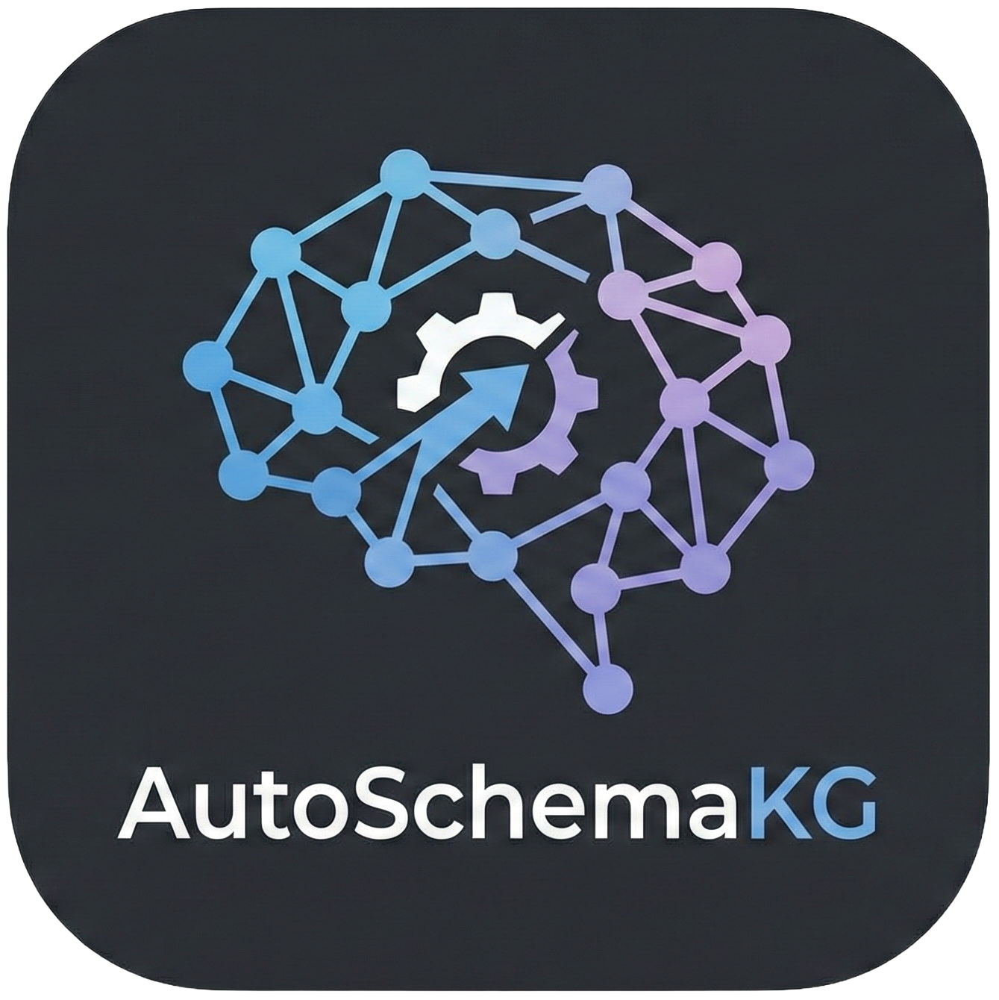

I am a Ph.D. student of HKUST at KnowComp, advised by Prof. Yangqiu Song.
Before that, I got my master degree from CUHK, advised by Prof. James Cheng. I also got my B.E. degree from BJTU, advised by Prof. Huaiyu Wan. I also worked as a Research Assistant in the Center of Machine Learning Research of PKU, advised by Prof. Wentao Zhang.
My research interests include: Large Language Models for Knowledge Graphs and Knowledge Graphs for Large Language Models.
Open-Source Projects
-
HiRAG is an open-source project that introduces unsupervised hierarchical KG indexing and a novel bridging mechanism for effective knowledge integration, significantly advancing the state-of-the-art in RAG systems.

-
 AutoSchemaKG is a novel framework for automatic knowledge graph construction that combines schema generation via conceptualization.


Preprints and Publications
* indicates equal contributions.-
AutoGraph-R1: End-to-End Reinforcement Learning for Knowledge Graph Construction
In Submission
[paper] [code] -
AtlasKV: Augmenting LLMs with Billion-Scale Knowledge Graphs in 20GB VRAM
In International Conference on Learning Representations (ICLR), 2026
[paper] [code] -
AutoSchemaKG: Autonomous Knowledge Graph Construction through Dynamic Schema Induction from Web-Scale Corpora
In Submission
[paper] [code] -
Retrieval-Augmented Generation with Hierarchical Knowledge
In Empirical Methods in Natural Language Processing (EMNLP), 2025, Findings
[paper] [code] -
Can LLMs be Good Graph Judge for Knowledge Graph Construction?
In Empirical Methods in Natural Language Processing (EMNLP), 2025, Main Conference
[paper] [code] -
Next-POI Recommendation via Spatial-Temporal Knowledge Graph Contrastive Learning and Trajectory Prompt
In IEEE Transactions on Knowledge and Data Engineering (TKDE), 2025
[paper] [code] -
Building and Exploiting Spatial-Temporal Knowledge Graph for Next POI Recommendation
In Knowledge-Based Systems (KBS), 2022
[paper] [code]


Education
-
Ph.D. in CSE at HKUST, Hong Kong SAR, China 2025-2029(expected)
-
M.Sc. in CSE at CUHK, Hong Kong SAR, China 2024-2025
-
B.E. in CS at BJTU, Beijing, China 2019-2023
Selected Awards
-
🏆 Huawei Spark Award 2024
🏆 Second Prize of Huawei Cup CPMCM (National) 2024
Academic Service
-
Conference Reviewer: ARR Feb 2025, ARR May 2025, ICML 2026.
Journal Reviewer: IEEE TKDE.
Conference Volunteer: EMNLP 2025.
Teaching Assistant
-
2026 Spring: Natural Language Processing. CSIT5520